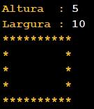

inicio ProgramaPrincipal
ler inteiro altura "Altura : "
ler inteiro largura "Largura : "
executar caixa(largura , altura)
fim ProgramaPrincipal
funcao vazio linha(inteiro n)
iterar inteiro i de 0 até n passo 1
escrever "*"
fim iterar
escrever "\n"
fim linha
funcao vazio interior(inteiro n)
escrever "*"
iterar inteiro i de 1 até n - 1 passo 1
escrever " "
fim iterar
escrever "*\n"
fim interior
funcao vazio caixa(inteiro larg , inteiro alt)
executar linha(larg)
iterar inteiro i de 1 até alt - 1 passo 1
executar interior(larg)
fim iterar
executar linha(larg)
fim caixa